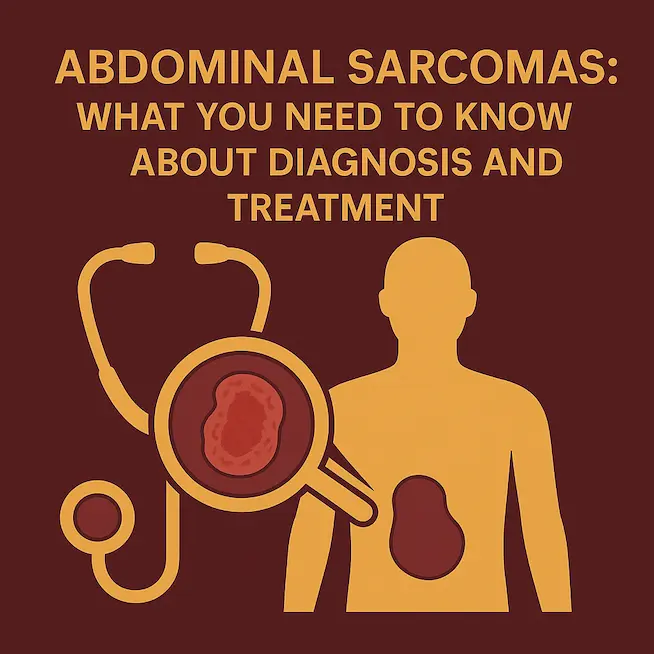
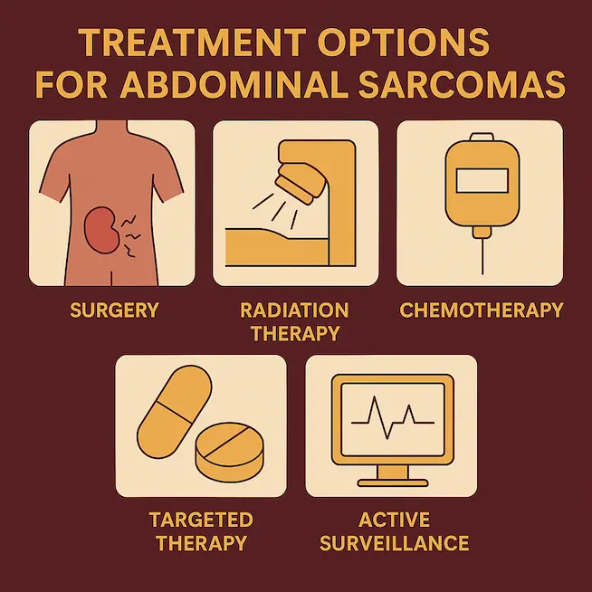

Diagnosing an abdominal sarcoma involves several steps, as these tumours are rare and often located deep inside the body. Here’s how doctors typically find out what’s going on:
How Are Sarcomas Diagnosed?

Diagnosing an abdominal sarcoma involves several steps, as these tumours are rare and often located deep inside the body. Here’s how doctors typically find out what’s going on:
- Physical Examination & Medical History
Your doctor may start by asking about symptoms such as pain, swelling, or a lump in the abdomen and then perform a physical examination. - Imaging Tests
- Ultrasound: Often the first test used if a lump or swelling is suspected.
- CT Scan or MRI: These provide detailed images of the inside of the abdomen, helping doctors understand the size, location, and extent of the tumour.
- Biopsy
A biopsy may help to confirm the diagnosis. A small sample of the tumour is taken, usually with a needle under imaging guidance, and examined under a microscope to determine the type of sarcoma. - Special Laboratory Tests
The biopsy sample may also undergo additional tests, such as immunohistochemistry or genetic analysis, to help pinpoint the exact type of sarcoma or soft tissue tumour. - PET Scan (in selected cases)
This test may be done to check if the tumour has spread to other parts of the body. - Histopathology and Molecular Testing
Histopathology involves examining the tumor tissue under a microscope to identify the specific type of sarcoma and its characteristics, while molecular testing analyzes the genetic makeup and protein markers of the tumor cells. These detailed analyses are crucial for determining the most effective treatment approach, as different sarcoma subtypes respond differently to various therapies like targeted drugs or chemotherapy.
What will be included in the treatment of an abdominal sarcoma?

Management of abdominal sarcomas is multimodal and individualised. The primary goal is to achieve complete tumour control while preserving organ function.
Treatment for abdominal sarcomas depends on the type, size, location, and stage of the tumor, as well as the patient’s overall health. A team of specialists usually works together to plan the best approach. Here are the main treatment options:
- Surgery
Surgery is often the first and most important treatment. The goal is to remove the tumor completely, along with a margin of healthy tissue around it to reduce the risk of recurrence. Sometimes nearby organs may need to be partially removed if they are involved. - Radiation Therapy
Radiation may be used before surgery to shrink the tumor, or after surgery to kill any remaining cancer cells. In some cases where surgery is not possible, radiation may be the main treatment. - Chemotherapy
Chemotherapy is not always effective for all sarcomas, but it may be used in certain types or advanced cases, especially when the cancer has spread. It may also be used before surgery in select patients. - Targeted Therapy
Some sarcomas like GIST respond well to targeted drugs (such as imatinib) that block specific cancer-driving proteins. This is often used when surgery alone isn’t enough. - Active Surveillance
In low-risk cases like small desmoid tumors or in situations where surgery may cause more harm than benefit, doctors may recommend close observation with regular scans.
A Personalized Approach
Every sarcoma is different. Your treatment plan will be personalized based on the exact diagnosis. A multidisciplinary team—including surgeons, oncologists, and radiologists—will work together to give you the best outcome.
Have a question this article does not answer?
Send us your reports. A specialist reviews them before you travel, so the first visit begins with a plan rather than a repeat test.